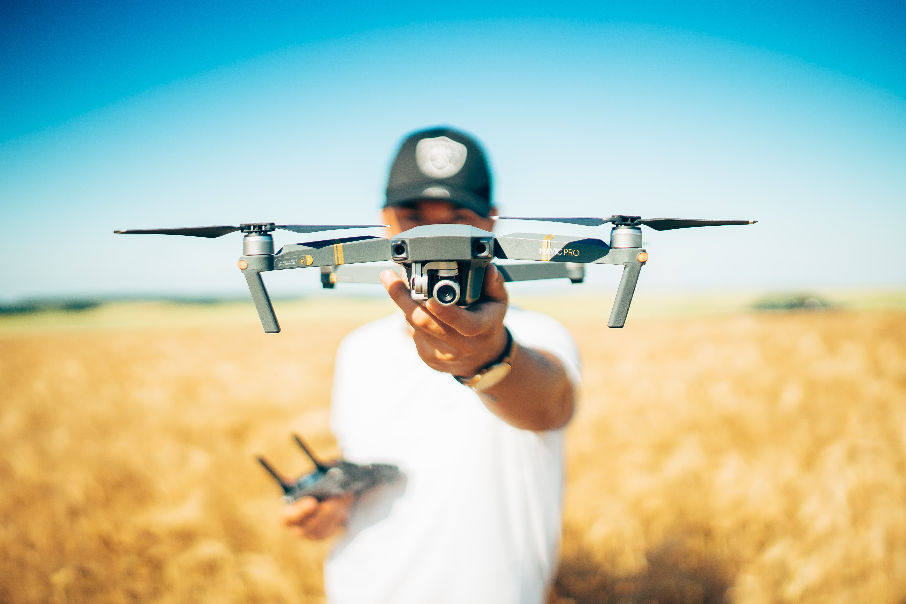

Architectural Design Technology
Architectural services such as planning and building control applications.
Building surveys for as-built CAD/Revit drawings.
Planning permission drawings to include as-built survey drawings and 360 scan,
with optional 3D model and rendered images.
Building control drawings and Specification writing.
BIM Revit 3D models, VR capabilities with rendering and Architectural visualisation.
Sketch-up models for initial concept design visuals alongside Hand drawn design concepts.

Drone survey services
Providing CAA permission UAV drone services. GVC and A2 CofC licenced and insured pilot.
Utilising a smaller and quieter drone for property surveys and aerial image and video. Roof inspections to avoid scaffold erection, aerial video / image condition surveys of larger properties.

Property Photography
Property 360 virtual tours and photography for estate agents and landlords.

Educational Services
HNC Construction tutor and facilitator of a range of modules. Private tutor for Revit software and Architectural design technology,
and Level 4 Architecture. Design tutor and educational supprt level 2-6.
Architecture Academy Services
For educational services in Architecture and Construction at Level 2-4,
the Architecture Hive work in collaboration with the Architecture Academy
Owned by RIBA and ARB Architect and educator Jaymeni Patel.
Jaymeni Patel design limited
Jaymeni Patel Linkedin